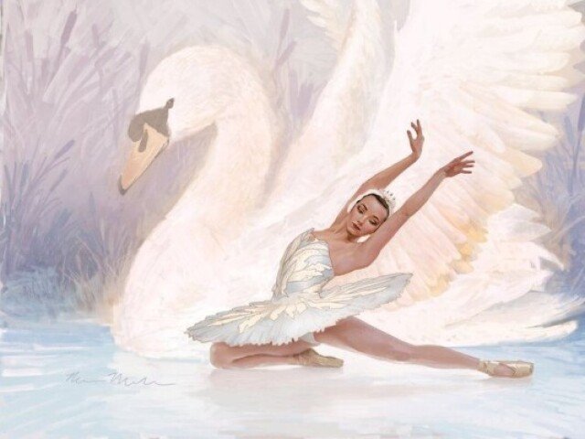

Bem-vindo ao site sobre a apresentação dos lagos cisneiros. Aqui você encontrará informações sobre os lagos, atividades, fotos e como entrar em contato.
Os lagos cisneiros são famosos pelo seu esplêndido reflexo na água. Existem três lagos cisneiros principais: Lago Segozzo, Lago Rosa e Lago Argento.